Oto jeszcze dłużej wyczekiwany przez wszystkich i największy jak dotąd: numer drugi.
Przyznaję się, że poprzednim numerze kłamałem. Wcale nie ma instalacji artystyczno-chemicznych, a "Widzenie Fiodorowa" zmieniło swoją nazwę przez te 76 dni. Znalazło się tu za to mnóstwo nieplanowanych treści. Miłego przeglądania.
~MP
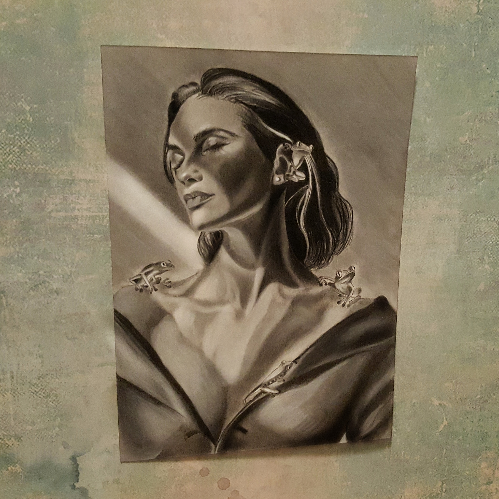 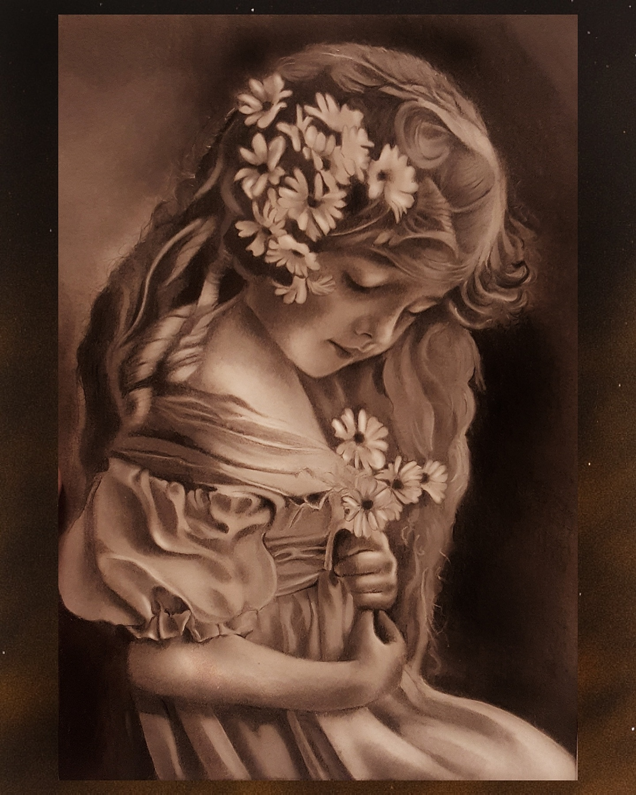{kind=link}
{kind=link}
Okładka MBDTF
Hania JarlaczyńskaWyszywana okładka My Beautiful Dark Twisted Fantasy, albumu Kanyego Westa.

Któregoś październikowego dnia do rosyjskiego chłopa o imieniu Morfiry Homeosław przyszedł list od jego obrzydliwie bogatej kuzynki, Manifoldy Sfernej. Kuzynka Manifolda pisała o niedawnych sukcesach swojego przedsiębiorstwa i radziła Morfiremu również zabrać się do jakiejś prawdziwej pracy. Poleciła mu, żeby zaczął od zadbania o swoją edukację. Najlepiej na kursie jubilerstwa lub kursie bukieciarstwa w Wyższej Szkole Jubilerstwa i Florystyki. Manifolda poleciła te kursy wszystkim swoim znajomym, a przecież Morfiry wie, że są równie bogaci co ona.
Morfiry nie znosił swojej kuzynki i jej gdakania, ale wizja napływu gotówki męczyła go przez parę następnych dni. W końcu nie wytrzymał. Zebrał poukrywane po domu pieniądze (miał paranoję, że Manifolda regularnie go okrada) i wyruszył do Wierchniewilujska, gdzie mieściła się szkoła.
{kind=link}
Na miejscu okazało się, że listy zapisów na kursy jubilerstwa i bukieciarstwa były pełne. Morfiremu zaoferowano za to międzywydziałowy kurs wytwarzania biżuterii z kwiatów topoli dwubarwnej, na który nie zapisał się prawie nikt. Nie mając lepszego wyboru, Morfiry przystał na propozycję i od razu zakupił potrzebne materiały, czyli szpulkę nici i wór kwiatów. Kwiaty topoli dwubarwnej, jak nazwa wskazuje, miały płatki w dwóch kolorach — żółtym i różowym — a do tego różną ich liczbę:
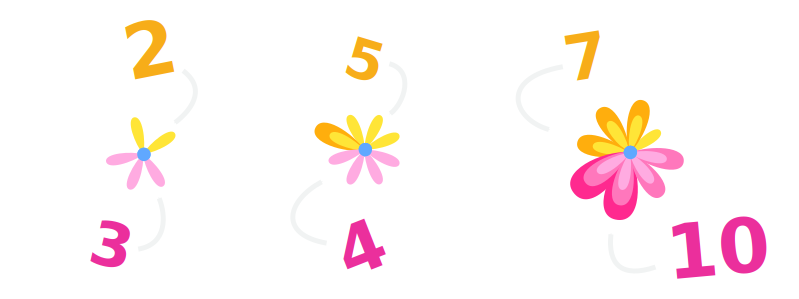{kind=link}
Niestety Morfiry nie wziął pod uwagę kosztów pobytu w mieście, a także wszystkich innych kosztów i tego samego dnia musiał wracać z Wierchniewilujska z pustym portfelem. Jego krótka edukacja nie poszła jednak na marne. Morfiry zdążył zapamiętać trzy zasady, których zawsze należy przestrzegać, gdy wytwarza się biżuterię z kwiatów topoli dwubarwnej:
-
W wyrobie nie można użyć dwóch kwiatów o tej samej liczbie różowych płatków i tej samej liczbie żółtych.
-
Prawie takie same kwiaty nie mogą być od siebie oddalone. Muszą znajdować się na nici tuż obok siebie.
Prawie takie same, czyli różniące się liczbą płatków tylko jednego koloru, o jeden.
-
Kwiaty różniące się w większym stopniu nie mogą znaleźć się obok siebie.
W szkole przedstawiono mu te zasady również w formie obrazkowej. Pary prawie takich samych kwiatów zaznaczono sercami (te muszą znaleźć się obok siebie), a pozostałe piorunami (te nie mogą znaleźć się obok siebie).
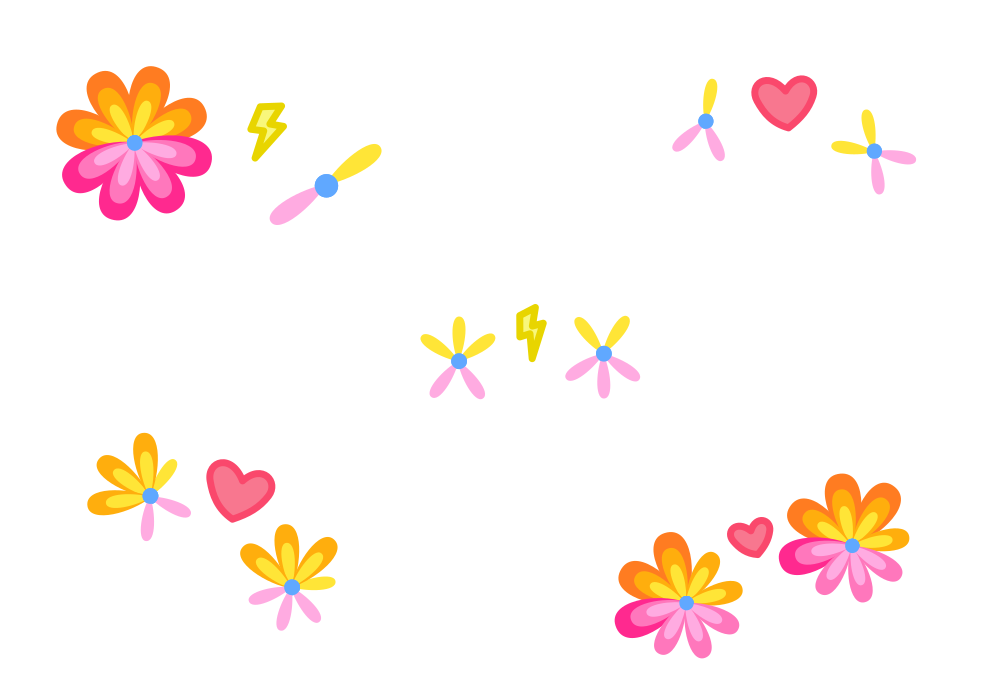{kind=link}
Niedoszłemu studentowi ta wiedza w zupełności wystarczała. Postanowił otworzyć własny zakład i wykonywać w nim biżuterię z materiałów, które mu zostały ze szkoły. Niedługo potem przy głównej drodze jego wsi pojawił się szyld Topolowe Rozmaitości i do Morfirego Homeosława zaczęły spływać zamówienia.
{kind=link}
Pierwsze zamówienie było na zawieszkę do kluczy. Morfiry osobiście nie zaliczyłby zawieszki do biżuterii, ale było mu zupełnie obojętne co wytwarza, dopóki zamówienie było opłacone. Zaczął od ucięcia kawałka nici, do której zamierzał przyczepić kilka kwiatów. Niestety Morfiry nie zdążył dowiedzieć się, które kwiaty należy wybierać, więc improwizował. Jako pierwszy przyczepił kwiat z jednym żółtym i jednym różowym płatkiem, jako drugi ten z dwoma żółtymi i dwoma różowymi, jako trzeci ten z trzema i tak dalej.
Gotowy produkt wyglądał bardzo podobnie do tych, które zdążył zobaczyć w Wyższej Szkole Jubilerstwa i Florystyki. Pozostała jeszcze najważniejsza czynność, czyli sprawdzenie trzech zasad. Okazało się, że przestrzeganie ich wcale nie było takie proste. Pary kolejnych kwiatów nie były prawie takie same, a mimo to znalazły się na nici obok siebie:
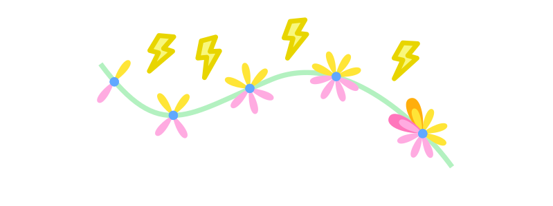{kind=link}
Nasz bohater wpadł na genialny pomysł, jak temu zaradzić: wybrać tylko prawie takie same kwiaty. Wyszukał kwiatek z trzema żółtymi i trzema różowymi płatkami oraz wszystkie kwiatki prawie takie same co on. Wszystko zdawało się iść po myśli Morfirego, dopóki nie spróbował ułożyć tych kwiatów na nici.
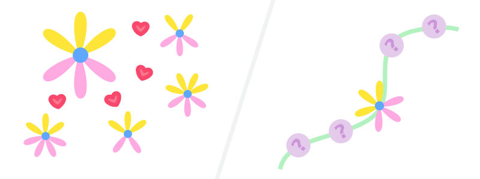{kind=link}
Morfiry sprawdził wszystkie ustawienia, ale za każdym razem któryś z czterech kwiatów nie znajdował się tuż obok tego środkowego, a przecież były prawie takie same. Było ich po prostu za dużo. Morfiry stracił zapał i z braku lepszego zajęcia zajął się porządkami. W nowo wynajętym zakładzie nie było za wiele do sprzątania, więc zadowolił się ułożeniem kwiatów w gablocie, którą znalazł na tyłach.
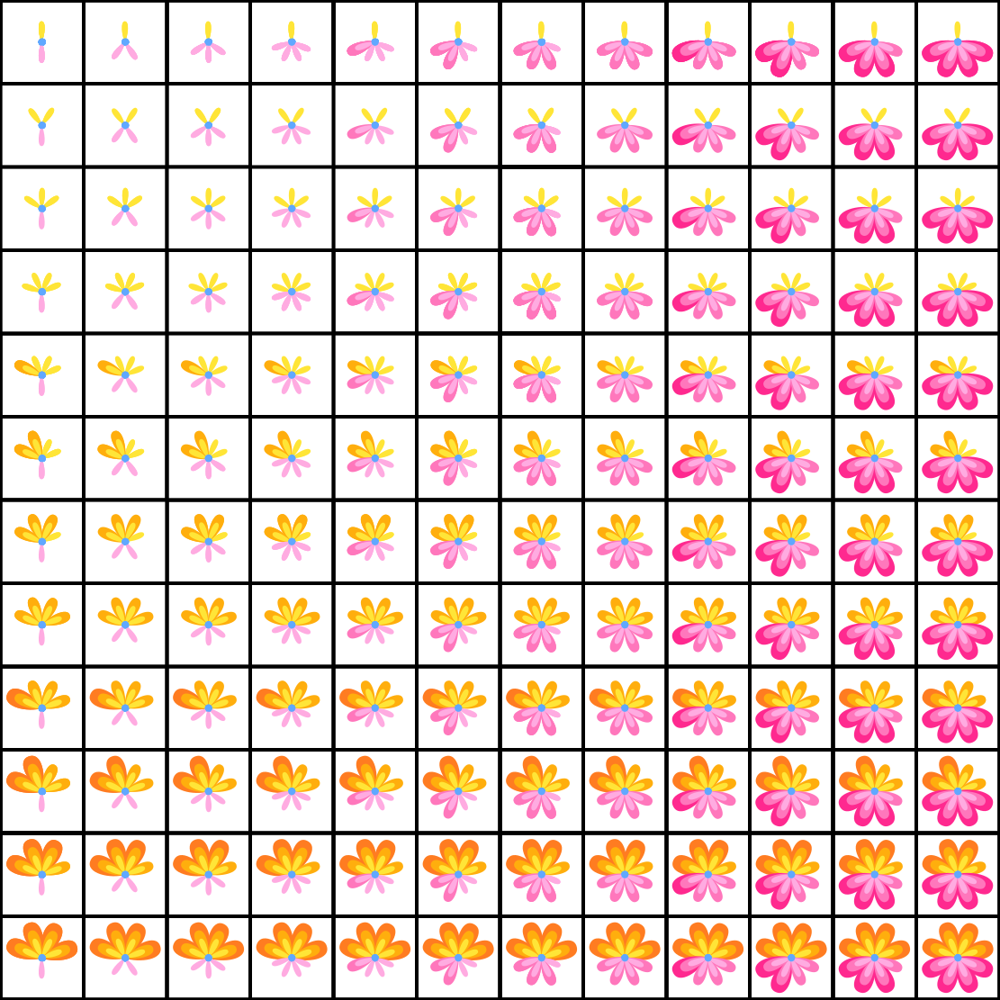{kind=link}
Nie przychodziła mu do głowy już żadna wymówka. W końcu przystąpił do drugiej próby z broszką. Wyciągnął po jednym kwiacie z kilku kolejnych przegródek pierwszego rzędu i dokleił je do kawałka nici.
Z zaskoczeniem odkrył, że wszystkie zasady były spełnione: Użył każdego rodzaju kwiatu tylko raz. Każdy kwiat różnił się od jego sąsiadów o jeden płatek, a każdy dalszy sąsiad różnił się o więcej. Doczepił nić do agrafki i włożył gotową borszkę do pudełka.
Morfiry zastanawiał się, dlaczego tym razem udało mu się spełnić zasady. Widocznie najlepsze kwiaty to te z jednym żółtym płatkiem i coraz większą liczbą różowych. Uznał ten wniosek za bardzo rozsądny i sięgnął po następne zamówienie.
Jego druga klientka życzyła sobie kolczyków. Wymyślił, że najłatwiej będzie je zrobić z dwóch krótkich kawałków nici. Dobrał do nich kwiaty według poznanego sposobu, czyli te, które miały jeden żółty płatek i kolejne liczby płatków różowych.
Spostrzegawczy Czytelnik spostrzeże, że Morfiry popełnił naprawdę amatorski błąd. W jego wyrobie znajdowały się duplikaty. Morfiry też w końcu to zauważył i zmodyfikował nieco swoją strategię, by mieć pewność, że każdego kwiatu użyje tylko raz. Wyciągnął długi kawałek nici i tym razem dokleił do niej kwiaty z aż dziesięciu kolejnych przegródek, a na końcu przeciął nić w połowie.
W tym podejściu problem był jeszcze bardziej subtelny: Wszystkie kwiaty, które ze sobą sąsiadowały były prawie takie same, zgodnie z zasadami. Morfiremu udało się też uniknąć powtórek. Ale była para kwiatów, które były prawie takie same, a mimo to nie znajdowały się obok siebie na nici — zastanów się, które.
Były to kwiaty na końcach kolczyków. Morfiry nie miał już więcej pomysłów, jak to naprawić. Zniecierpliwiony wybrał pięć kwiatów z jednego rzędu na pierwszy kolczyk, a pięć z zupełnie innego rzędu na drugi. O dziwo, zadziałało.
Morfiry Homeosław nie zdążył wymyślić, dlaczego tym razem kolczyki się udały, bo do zakładu wpadła kuzynka Manifolda. Manifolda dowiedziała się o powrocie Morfirego z Wierchniewilujska dopiero z listu, w którym błagał ją o pieniądze na pociąg; nie było wątpliwości, że przyjechała je odzyskać. Już w drzwiach zakładu okrzyczała go, że jest nierobem i darmozjadem, i właśnie zamierzała się na niego torebką, gdy jej uwagę przykuły kolczyki leżące na blacie.
— Jakie cudowne kolczyki! A ta broszka!
Morfiry szybko wyjaśnił, że Manifolda absolutnie nie może ich dostać, bo były wykonane na zamówienie.
— Miałem też kilka bransoletek, parę pierścionków, korale — kłamał, byle tylko zrobić jej na złość — ...ale wszystko już sprzedałem.
— Korale... — westchnęła Manifolda — Jeśli wykonasz takie dla mnie, to zastanowię się nad darowaniem Ci Twojego długu. — i wyszła, nie dając mu czasu, by odmówić.
Tego nie przewidział. Tak naprawdę wcale nie wiedział, jak wykonać korale. Morfiry siedział przez chwilę w ciszy, ale był pewien, że bez pomocy finansowej Manifoldy nie odniesie dużego sukcesu. Z ociąganiem zabrał się za jej zamówienie.
Zrobienie korali nie mogło być aż tak trudne. Wystarczy jedna nić, więc nie będzie problemów jak z kolczykami. Uciął kawałek, nakleił na niego dziesięć kolejnych kwiatów z pierwszego rzędu i zawiązał końce nici. Wszystkie kwiaty zdawały się spełniać zasady.
Wszystkie, oprócz jednej pary: Po jednej stronie węzła znajdował się kwiat z najmniejszą liczbą płatków różowych, a po drugiej — ten z największą. Morfiry sprawdził inne rozmieszczenia kwiatów, a nawet zastąpił niektóre kwiatami z drugiego rzędu, ale to nic nie dało. Przetestował też komplet kwiatów, z którego udało mu się zrobić kolczyki, ale z nimi także były same problemy.
Przez parę godzin tej "prawdziwej pracy" kwiaty wypełniły pomieszczenie słodkim, usypiającym zapachem. Zmęczony Morfiry przymknął oczy i już po chwili zapadł w drzemkę. Śniły mu się filiżanki. A może to były obwarzanki? Już nigdy nie potrafił sobie przypomnieć...
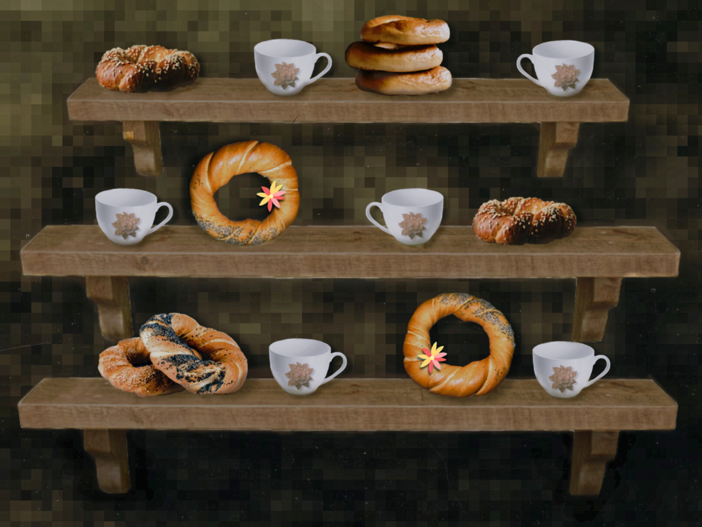{kind=link}
Gdy obudził się, wstawał już ranek. Przetarł oczy i spojrzał na gablotę, która przez noc odcisnęła na jego twarzy kratę zagłębień. Na gablocie leżał zawiązany kawałek nici przeznaczony na korale, który został tam jeszcze z wczorajszych prób. Morfiry z przyzwyczajenia sprawdził, czy kwiaty, obok których przechodziła nić, spełniają zasady. Zaraz... Upewnił się jeszcze dwa razy, ale nie, nie mylił się: wszystko było w porządku, nawet w miejscu wiązania!
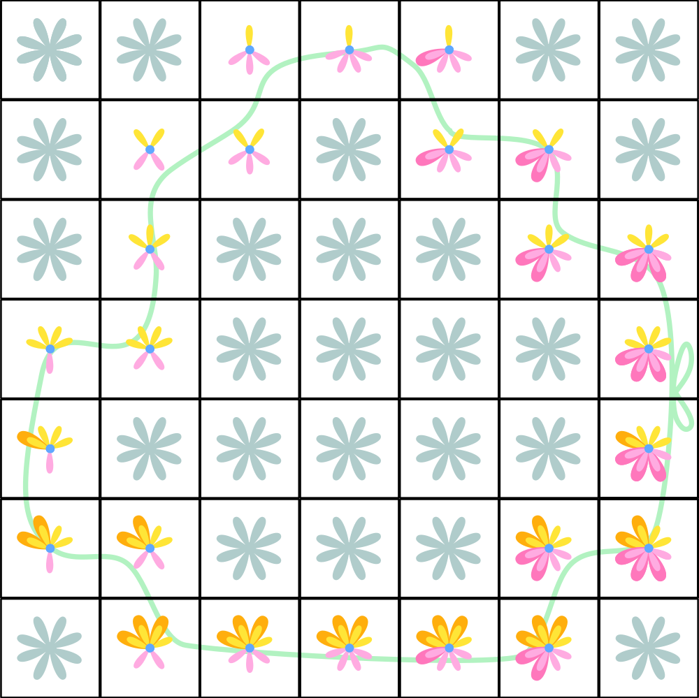{kind=link}
Przekonaj się sam(a) — wybierz dwa kwiatki znajdujące się obok siebie i sprawdź, że rzeczywiście są prawie takie same. W koralach nie znalazły się także żadne powtórki, bo w każdej przegródce znajdował się inny rodzaj kwiatów. Nie było też żadnej pary prawie takich samych kwiatów, które byłyby od siebie oddalone.
Ale jak to się stało, że przez sen znalazł jedyny komplet kwiatów nadający się na kolczyki? A może on nie był jedyny...? Spróbował jeszcze raz. Uciął kawałek nici i położył go na gablocie.
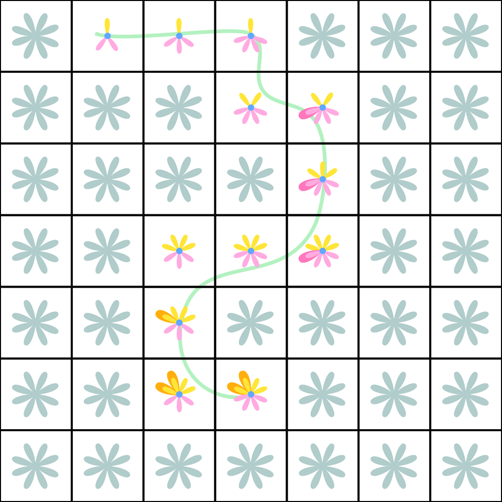{kind=link}
Doczepił do niego wszystkie kwiaty, obok których przechodził i zawiązał końce. Ale wtedy pojawił się problem, jak w jednej z jego wcześniejszych prób: Obok wiązania znajdowały się zupełnie niepodobne kwiaty.
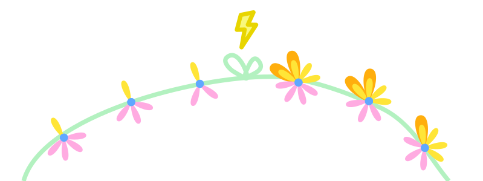{kind=link}
A gdy rozwiązał supeł okazało się coś jeszcze. Ten komplet kwiatów nie nadawał się na korale, ale za to można było zrobić z niego zawieszkę do kluczy. Czyżby to było dlatego, że tym razem Morfiry położył na gablocie niezawiązaną nić?
Morfiremu Homeosławowi przeszły ciarki po plecach. Przez cały ten czas poszukiwał reguły, według której powinien dobierać kwiaty do jego wyrobów, a ona po prostu nie istniała. To, czy jakiś kwiat nadawał się do wyrobu, nie miało związku z liczbą jego płatków, stosunkiem różowych do żółtych lub długością nici. Jedyne, co mógł zrobić, to przygotować nić w takim kształcie, jaki miała mieć w gotowym produkcie i położyć ją na gablocie.
To z tego powodu komplet kwiatów z jednego produktu nie działał w innym; po prostu nie da się ułożyć pętli w ten sam kształt, co niezawiązany kawałek nici. Podobnie jeden kawałek nici nie może przechodzić obok tych samych kwiatów, co dwa kawałki nici.
Ta właściwość wydała się Morfiremu bardzo przydatna i postanowił wymyślić na nią jakieś słowo. "Morfihomiczne" nie brzmiało według niego zbyt poważnie, więc zdecydował się na "homeomorficzne". (Już wyobrażał sobie zazdrość Manifoldy.) Zaczął mówić "homeomorficzne" na komplety kwiatów, z których da się wykonać ten sam produkt.
Do pierwszych korali Morfiry użył zupełnie innego kompletu kwiatów niż na ilustracji poniżej, a mimo to one też się do tego nadają. Z tego powodu te dwa zestawy kwiatów są homeomorficzne ze sobą. Wszystkie zestawy kwiatów, z których da się zrobić zawieszkę do kluczy, też są ze sobą homeomorficzne. Tak samo jest ze wszystkimi kompletami kwiatów nadających się na kolczyki.
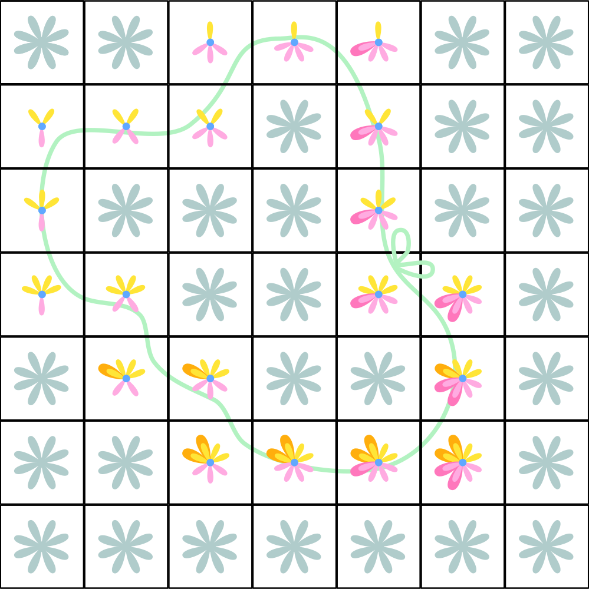{kind=link}
Morfiry postanowił wykorzystać swoje odkrycia w ostatnim zamówieniu. Jego klient nie zotawił podpisu, a jedynie pseudonim "Car M II". Tajemniczy "Car M II" zamówił u Morfirego Homeosława najcieńsze stringi, jakie umiał zrobić. Morfiremu nie robiło najmniejszej różnicy, za co mu płacą; po prostu zabrał się do przygotowywania nici. Wykonał pętlę i przywiązał drugi kawałek dwóch miejscach po jej przeciwnych stronach. Następnie położył to "rusztowanie" na gablocie i przyczepił kwiaty w miejscach, gdzie przechodziła nić. W ten sposób powstały najcieńsze topolowe stringi w Rosji, trzymane obecnie w pałacu w Liwadii (choć nikt nie wie, jak się tam znalazły).
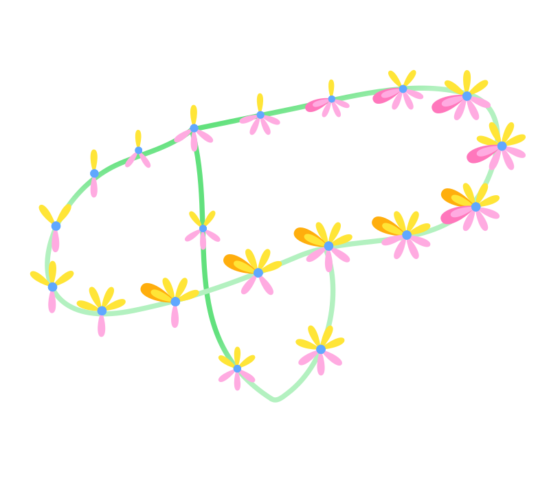{kind=link}
Odkrycie homeomorfizmu zapewniło Morfiremu ogromny sukces. Nie marnował już czasu na analizowanie układów kwiatów, tylko wybierał odpowiedni kształt nici i doczepiał je do niej. Jego zakład zaczął się rozwijać i Morfiry stał się najlepszym jubilerem-florystą w promieniu wielu mil (do jego sukcesu przyczynił się również fakt, że był jedynym jubilerem-florystą w kraju).
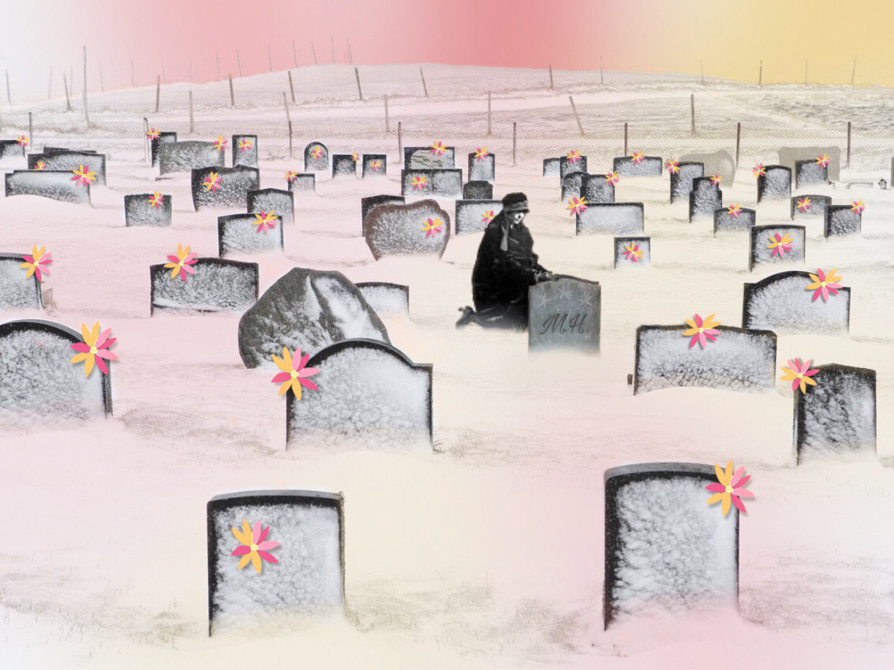{kind=link}
Jeszcze za jego życia Morfiry umarł. Z szacunku do zmarłego Manifolda bardzo długo wstrzymywała się ze sprzedawaniem jego majątku. Dopiero następnego dnia na pogrzebie przekonała jakiegoś biednego matematyka, by kupił od niej notatki Morfirego. Wymiana okazała się jednak korzystna dla obu stron. Odkrycia Morfirego Homeosława znalazły zastosowanie w rozwiązywaniu całej grupy problemów geometrycznych. (Manifolda przez lata wypominała sobie, że wzięła za nie za mało.)
Pewnie myślisz, że cała ta historia nie ma sensu i jest zmyślona. Nic bardziej mylnego. Homeomorfizm to jedna z podstawowych właściwości, którymi zajmuje się topologia — dziedzina matematyki nazwana tak na cześć Morfirego, który tworzył biżuterię z kwiatów topoli w swoim zakładzie Topolowe Rozmaitości.
{kind=link}
Dziękuję
Dziękuję Hani Jarlaczyńskiej za obiektywnie najlepszą okładkę albumu obiektywnie najlepszego artysty na świecie. Dziękuję Nikoli Świerczek, że dzieli się za mną nowym materiałem, zanim jeszcze zdążę opublikować poprzedni. Dziękuję Natalii Pałac za fenomenalne ilustracje. Ogromnie dziękuję Hani Powierża za dziesiątki godzin pracy włożonej w animacje oraz wytrwałość za każdym razem, gdy zmieniałem opowiadanie.
Do następnego numeru wylosuję któreś z tematów: instalacje artystyczno-chemiczne, niewidomi, nurkowanie i hiperefektywna aktywność fizyczna. (A może znowu kłamię?) Jeśli chcesz coś opublikować lub masz pomysł na artykuł, rysunek, panel dyskusyjny, grę, podcast albo inny rodzaj twórczości, koniecznie do mnie napisz przez Messenger (Mikołaj Powierża) lub na maila podanego na dole strony.